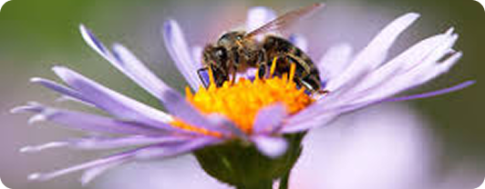
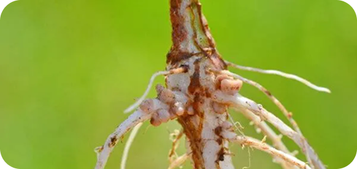

Mutualismo
O mutualismo é um tipo de interação biológica entre duas ou mais espécies que resulta em benefícios mútuos,
ou seja, ambas as partes envolvidas na relação se beneficiam de alguma forma. Essa relação é um exemplo
clássico de cooperação entre organismos de diferentes espécies. O mutualismo é uma das várias formas de
interação entre organismos, que também inclui comensalismo, parasitismo, competição e outros.
O mutualismo pode se manifestar de diferentes maneiras, dependendo da natureza da interação e dos benefícios
envolvidos. Aqui estão alguns exemplos de tipos de mutualismo:

1. Mutualismo Trocado ou Recíproco
Este é o tipo mais comum de mutualismo, onde ambas as espécies se ajudam mutuamente. Um exemplo clássico é a relação
entre as abelhas e as flores. As abelhas coletam néctar das flores para se alimentar, e, em troca, elas ajudam na
polinização, permitindo que as flores se reproduzam. Ambos se beneficiam da interação: as abelhas ganham comida, e as
flores aumentam suas chances de fertilização.
2. Mutualismo Obrigatório
Em relações de mutualismo obrigatório, as espécies dependem completamente uma da outra para sobreviver. Um exemplo
clássico desse tipo de interação ocorre entre certos tipos de fungos e algas que formam líquenes. Os fungos fornecem
um ambiente protegido para as algas, enquanto as algas realizam a fotossíntese, fornecendo nutrientes para o fungo.
Sem a presença da outra parte
